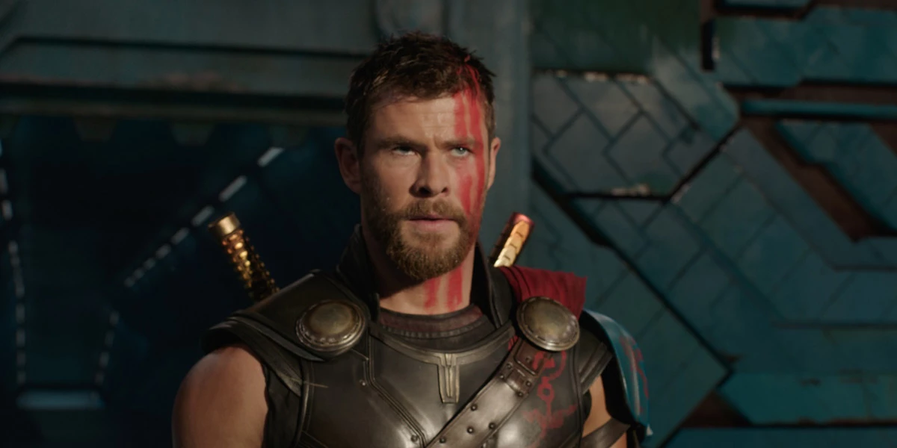
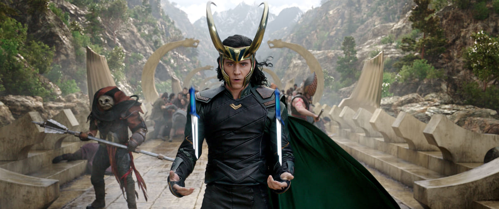
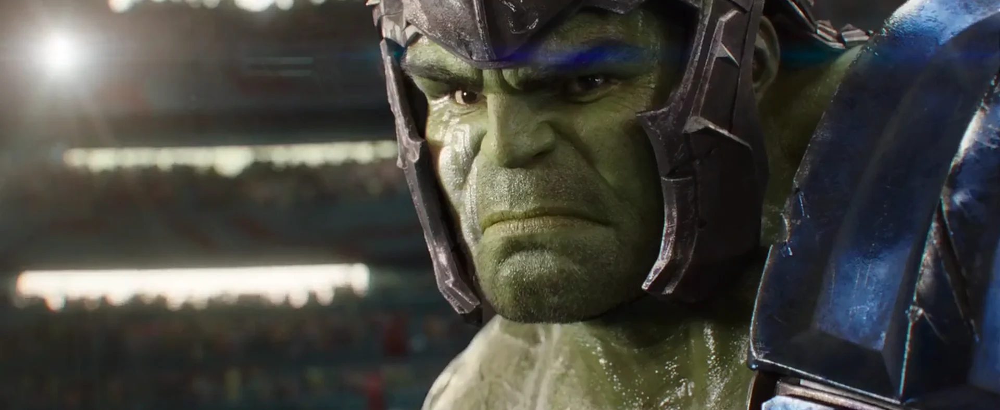
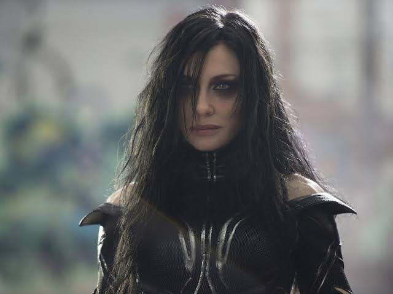

ソー
髪を刈られた闘士 // 真の雷神へ覚醒するアスガルドの王
姉ヘラの襲撃により最愛のハンマー「ムジョルニア」を粉砕され、未知の辺境惑星サカールへ売られてしまう。自慢の長髪を刈られ、闘技場でかつての盟友ハルクと殺し合いをさせられる羽目に。ハンマーという「道具」に頼っていた己の未熟さを悟り、自身の肉体から直接凄まじい雷光を放つ「真の雷神」の力に覚醒、故郷を救うためロキらと即興チーム「リベンジャーズ」を結成する。
「助けて～をやるか。好きだったろう。」

ロキ
グランドマスターの遊び友達 // 憎みきれない悪戯の神
オーディンに変装してアスガルドを統治していたがソーに見破られ、地球へ父を捜しに行く途中でヘラに襲撃され、ソーより数週間早くサカール星へ漂着。持ち前の世渡り上手さで支配者グランドマスターの懐に入り込み、VIP席で優雅に暮らしていた。相変わらずソーを裏切ろうとするが、兄の成長と信頼の言葉に動かされ、巨大戦艦を駆ってアスガルドの民を救うべく決戦に駆けつける。
「やらない。嫌いだ絶対にやらない。」

ハルク / ブルース・バナー
サカール闘技場の絶対王者 // クインジェットの迷子
ソコヴィア決戦の後、クインジェットで地球を去り、サカール星に墜落。2年間ずっとバナーに戻ることなく「ハルク」の状態で過ごし、グランドマスターお気に入りの絶対無敵の王者として国民から崇拝されていた。カタコトの言葉を喋るなど知性がやや発達しており、ソーとの喧嘩を経てクインジェットの映像（ナターシャの声）を見たことで、ようやくバナーの姿を取り戻す。
「（咆哮）」

ヘラ / 死の女神
封印を解かれたオーディンの長女 // アスガルドの絶対的支配者
オーディンと共に数々の世界を血の歴史で征服した、ソーとロキの邪悪な実の姉。あまりの残虐性と野心ゆえに父によって数千年間封印されていたが、オーディンの崩御によって復活。圧倒的な死の魔術でソーの片目を奪い、無尽蔵に鋭利なネクロブレードを出現させてアスガルドの軍隊を単身で壊滅させる。アスガルドの土地そのものから無限に力を得るため、彼女を倒すには「ラグナロク（故郷の崩壊）」を引き起こすしかなかった。
「私は死の女神だ。」